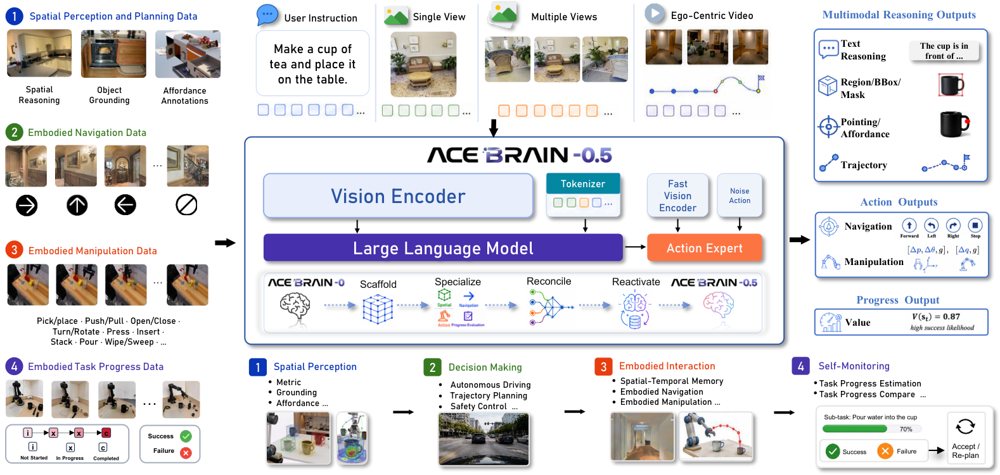

Overview
ACE-Brain-0.5 is a unified embodied foundation model for Physical Agentic AI. It integrates spatial perception, decision making, embodied interaction, self monitoring, and self improvement into a single closed-loop model for physical agents.
ACE-Brain-0.5 organizes robot intelligence into five tightly coupled cognitive functions: Spatial Perception, Decision Making, Embodied Interaction, Self Monitoring, and Self Improvement.

Demo
ACE-Brain-0.5-VLA performs washing clothes tasks in a hotel laundry room.
Key Features
Unified Embodied Foundation Model
A single closed-loop model spanning spatial perception, decision making, embodied interaction, self monitoring, and self improvement.
SSR+ Training Paradigm
Extends Scaffold-Specialize-Reconcile with a Reactivate stage to unify spatial reasoning, grounding, navigation, manipulation, and progress estimation without cross-task interference.
Architecture
ACE-Brain-0.5 uses a shared embodied backbone to encode heterogeneous inputs and maintain a unified scene-and-task representation, while dedicated interfaces decode this shared state into grounding, executable planning, robot actions, and progress-estimation signals.

Evaluation Results
ACE-Brain-0.5 is evaluated across spatial QA, grounding, driving, navigation, manipulation, and progress estimation.
Values are from the technical report. NE and ShareRobot-Traj are lower-is-better; all other listed metrics are higher-is-better.
Spatial QA
| Benchmark | GPT-5.4 | Gemini-2.5-Pro | Cosmos3-Nano | RynnBrain-8B | ACE-Brain-0 | ACE-Brain-0.5 |
|---|---|---|---|---|---|---|
| VSI | 52.6 | 43.4 | 54.9 | 71.0 | 63.1 | 62.2 |
| MMSI | 31.3 | 38.0 | 36.2 | 39.6 | 32.2 | 35.5 |
| MindCube | 45.3 | 57.6 | 34.8 | 56.6 | 82.1 | 86.3 |
| ScanQA | 78.3 | 67.0 | 60.9 | 60.2 | 97.3 | 99.2 |
| SQA3D | 45.8 | 37.3 | 44.2 | 43.3 | 54.5 | 62.6 |
| Scan2Cap | 14.0 | 16.8 | 9.2 | 2.8 | 75.2 | 83.3 |
| ScanRefer | 61.7 | 65.9 | 5.4 | 5.4 | 61.4 | 70.2 |
| Multi3DRef | 45.1 | 54.4 | 8.1 | 8.1 | 55.9 | 72.4 |
| SparBench | 46.1 | 46.2 | 54.8 | 49.8 | 44.2 | 39.7 |
| MMSIVideo | 32.8 | 34.5 | 27.2 | 27.5 | 26.4 | 30.4 |
| EmbSpatial | 73.2 | 78.7 | 82.9 | 80.0 | 77.8 | 75.9 |
| ERQA | 50.5 | 55.7 | 46.0 | 46.8 | 41.5 | 46.3 |
| SAT | 73.3 | 78.7 | 80.7 | 78.0 | 92.0 | 82.7 |
BibTeX
@misc{brainteam2026acebrain05unifiedembodiedfoundational,
title={ACE-Brain-0.5: A Unified Embodied Foundational Model for Physical Agentic AI},
author={Brain Team and Ziyang Gong and Haoming Gu and Zehang Luo and Tianyi Zhang and Tao Tao and Yixiao Chi and Zhe Liu and Lingsi Zhu and Jingyuan Liu and Anke Tang and Songze Li and Yilun Kong and Ningjing Liu and Tianyu Zhu and Yunpeng Qing and Shuang Luo and Xiang Liu and Shi Fu and Dawei Nie and Sixiang Liu and Zhexi Wen and Feng Pan and Xiaofeng Wang and Zhi Hou and Chunxiao Liu and Xue Yang and Junchi Yan and Hengshuang Zhao and Dacheng Tao and Xiaogang Wang},
year={2026},
eprint={2607.04426},
archivePrefix={arXiv},
primaryClass={cs.RO},
url={https://arxiv.org/abs/2607.04426},
}